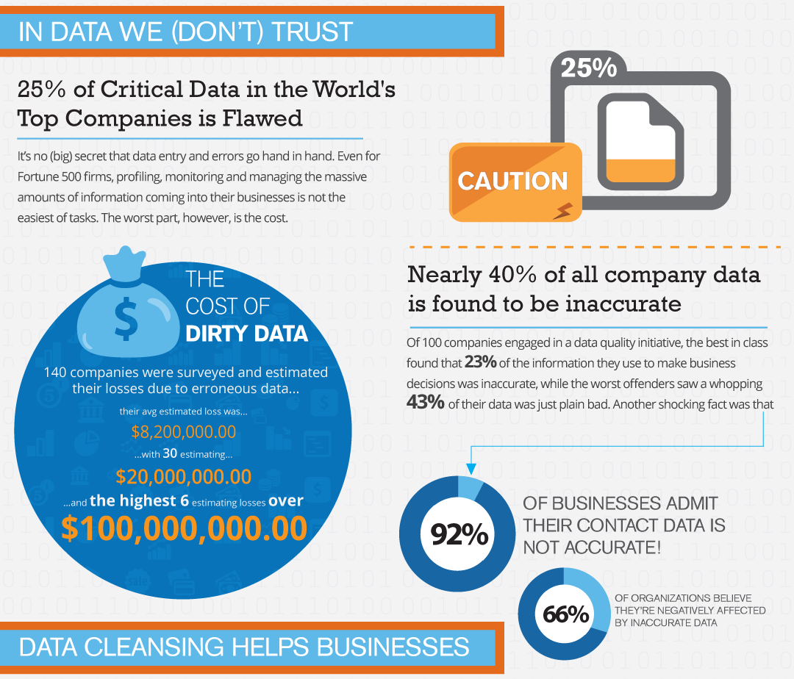

Pre-processing

Jeremy Leipzig
Department of Information Science
College of Computing and Informatics
Drexel University
Some themes
Acquired data varies greatly in quality.
Cleaning/pre-processing data take a lot of time.
pre-processing tasks exist throughout pipelines.
Always save random number seeds for reproducibility!
Curation, in general
Curation is a broad and important data science,
and generally refers to data management.
Curation tasks appear throughout the data science lifecycle.
- A few examples:
-
At collection where/how to store data?
-
Before analyzing, is data clean or complete?
-
When exploring, should data be re-organized?
-
While analyzing, should some data be witheld?
-
Upon deployment, store user interaction records.
-
How should results be stored for visualization?
Data intake
It's good to have an idea of size before downloading.
Don't neglect considering Big Data constraints (the Vs).
If data is streaming, benchmark and plan ahead.
In addition, vet an early sample
and make plans to clean data on intake.
It can be considerably easier to "munge" front end.
Required reading: What is data munging/wrangling?
Understanding what you've got
As we saw, data acquisition is its own art and process.
Once you have data, it's important to look closely at it.
Depending on the source, data can be clean or messy.
E.g., a csv of numeric values might be "clean",
while inconsistent, scraped html might be "dirty".
Anything in between can happen, e.g., NAs in a csv,
or a formatting error throws off the number of columns.
Really, though, beauty lies in the eye of the beholder...
...and clean vs. messy can have more to do with expectations.
Handling these considerations is often called pre-processing.
Quality
On the other hand, data quality can be very objective.
Hand-coded data is prone to human error.
E.g., a one digit error in a product number at register.
Humans can also algorithmically induce errors via scripting,
e.g., every returned value incorrect with an index is off by 1.
Sometimes an algorithm returns terrible collection results,
like can happen in optical character recognition (text scanning).
Avoiding/rectifying issues like these is paramount with curation.
Preparation
Pre-processing isn't just about correction or cleaning data.
Oftentimes, data needs to be modified from a raw form.
This is often with text-based machine learning,
where a transcript might need to be organized as discourse.
Beyond this, many models use the "bag-of-words" framework,
which represents texts by counts of words.
Text preparation goes hand in hand with regular expressions,
which establish word-defining patterns.
and are central to document "cleaning" tasks,
like removing headers and markup from html.
Reduction
This relates to some aspects of data cleansing
insofar as unnecessary data, like markup in text, is removed.
However, logistics might make collecting all data impossible,
as is the case with the Kepler satellite photography,
but an analysis may also not benefit from including all data,
and reduction might include smoothing or down-sampling.
Sampling and randomness
So, reduction might include decreasing resolution,
or feature selection, e.g., choosing content words for analysis,
but if there is just plain more data than is necessary,
or if data must be split for training and validation,
random sampling becomes an important pre-processing task.
Science should always be reproducible, randomness included,
which is where pseudorandom numbers come into play.
So, when sampling data, always save random number "seeds,"
which identify a particular randomization for reproducibility.
Feature selection
In machine learning, "features" are predictive variables.
Selection can be a choice of columns from a table,
or be considerably more complex with unstructured data,
and involve extraction of domain-relevant terms from texts,
or with images, determining what features classify cats vs. dogs.
Even if "tail shape" is identified as a salient feature,
it becomes necessary to extract sections that represent tails.
This, and feature selection in general, is not an easy task!
Some research programs are devoted to feature selection,
and attention should be given when building models.
Integration
Sometimes multiple data sources are necessary for an analysis.
Integration can be straightforward with structured data,
where record values are joined according to keys,
but oftentimes this may not be the case.
E.g., how can one link images by location names, like Paris
to geospatial shapefiles for an analysis?
Python has an API that determines lat/lons (geocoder),
so after characterizing an integration need,
it's always best to see if someone else has solved the task!
Discretization
This is about grouping data meaningfully,
like into the bins of a histogram,
but grouping most often assumes some choice.
So, care should be take for how grouping is executed,
whether by tuning the bin sizes/numbers for a histogram
or carefully choosing algorithms for network clustering.
Commonly, clustering algorithms depend on initial states,
whereupon randomization once again plays a role with seeds
and "bootstrapping" multiple runs for regularity.
Pipelines and Workflows
Steps in a data analysis often are composed of steps performed in either
serial or parallel
crashing in a step shouldn't have to mean starting over
introduction of new samples or items shouldn't clobber what you've done
Pipeline frameworks

Recap
Acquired data varies greatly in quality.
Cleaning/pre-processing data take a lot of time.
pre-processing tasks exist throughout pipelines.
Always save random number seeds for reproducibility!
- Next time: Storage
-
structured data types
-
determining how to store data
-
data retrieval systems